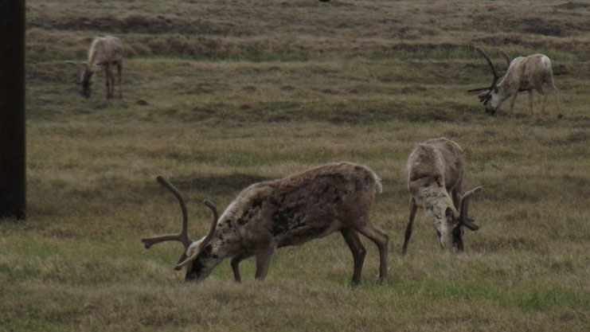

Shift in caribou movements may be tied to human activity
aperture':'0','credit':'','camera':'','caption':'','created_timestamp':'0','copyright':'','focal_length':'0','iso':'0','shutter_speed':'0','title':'','orientation':'1'}' data-image-title='cariboe2-1' data-large-file='https://frontiersinblog.files.wordpress.com/2021/02/cariboe2-1.jpg?w=741' data-medium-file='https://frontiersinblog.files.wordpress.com/2021/02/cariboe2-1.jpg?w=300' data-orig-file='https://frontiersinblog.files.wordpress.com/2021/02/cariboe2-1.jpg' data-orig-size='741,417' data-permalink='https://blog.frontiersin.org/cariboe2-1/' sizes='(max-width: 741px) 100vw, 741px' src='https://frontiersinblog.files.wordpress.com/2021/02/cariboe2-1.jpg' srcset='https://frontiersinblog.files.wordpress.com/2021/02/cariboe2-1.jpg 741w, https://frontiersinblog.files.wordpress.com/2021/02/cariboe2-1.jpg?w=150 150w, https://frontiersinblog.files.wordpress.com/2021/02/cariboe2-1.jpg?w=300 300w'>
Posted On: 2021-02-01T00:00:00
Posted By: Michael Miller

Content Date: 2021-02-01
Download Date: 2021-07-10
Document ID: L0C04F2FA